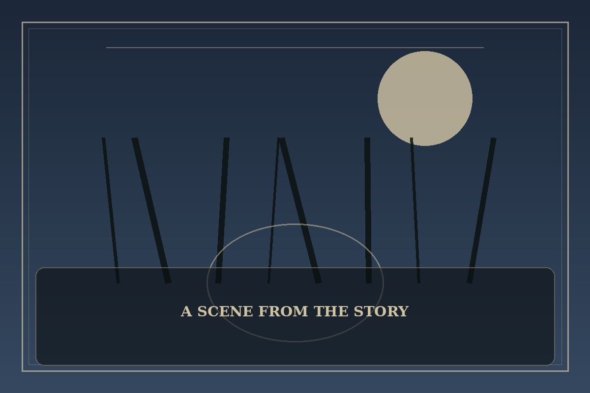

Annarasumanara
Synopsis
A struggling student meets a mysterious magician whose questions challenge her belief that adulthood must mean abandoning every dream. The encounter invites her to imagine a life beyond survival alone.
Chapter 1: Do You Believe in Magic?
The abandoned amusement park had a sign that read, Do you believe in magic? Most people passed it without looking. Yuna stopped because the letters were freshly painted, though the gate had been rusted shut for years.
Inside, a man in a worn coat performed a trick with a paper flower. He asked Yuna what she wanted to become, and she gave the practical answer she had rehearsed for teachers and relatives. He waited, then asked what she would choose if nobody laughed at her.
Yuna did not find a shortcut out of poverty or a spell that solved her responsibilities. She found a sketchbook in her bag and drew until the sky grew pale. Magic, she decided, might be the moment a person remembers that a future can contain more than the next problem to endure.

This fan-made sample is an original piece created for a student website project; it is not an official chapter of Annarasumanara.